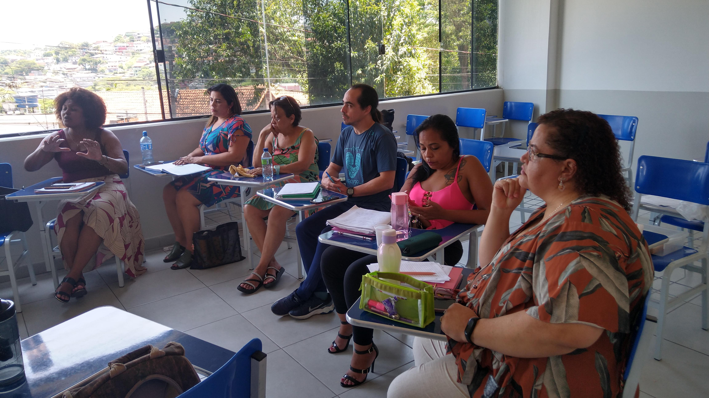
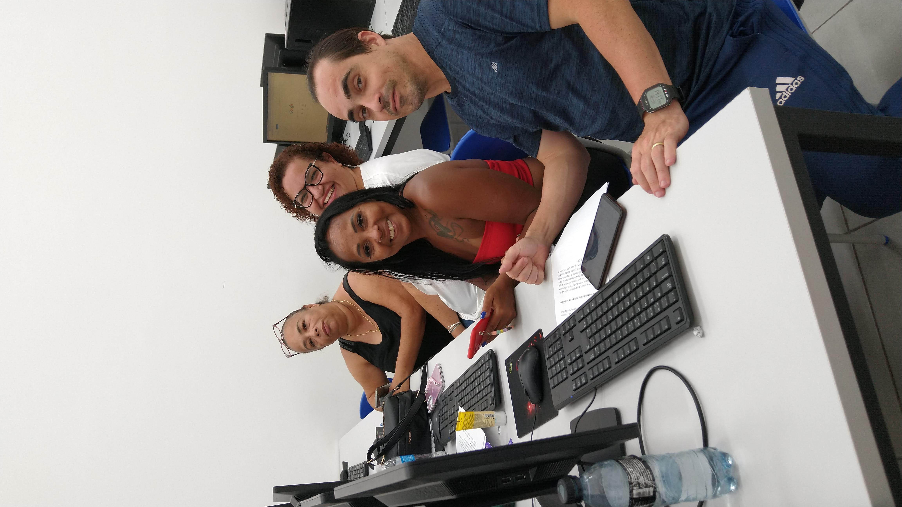
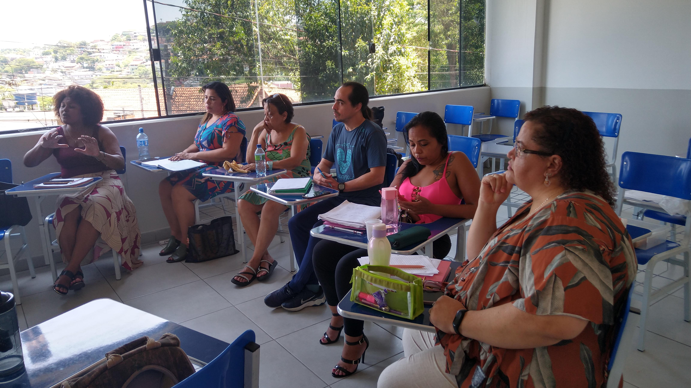
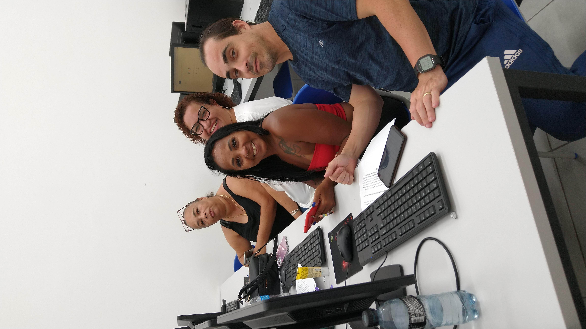

Plasticidade Neural: O cérebro é capaz de se reorganizar e formar novas conexões ao longo da vida, destacando a importância da prática e da experiência na aprendizagem contínua.
Individualização: Cada cérebro é único, e os alunos têm diferentes estilos de aprendizagem e ritmos. A Neuroeducação enfatiza a necessidade de personalizar o ensino para atender às necessidades individuais dos alunos.
Importância das Emoções: As emoções têm um papel crucial na aprendizagem. Estados emocionais positivos podem facilitar a retenção de informações, enquanto estados negativos podem dificultar o aprendizado.
Integração Sensorial: Aprender envolve múltiplos sentidos. Incorporar abordagens multissensoriais pode enriquecer a experiência de aprendizagem e ajudar na retenção de informações.
Contextualização: A aprendizagem é mais eficaz quando o conteúdo é relevante e significativo para os alunos. Contextualizar o ensino dentro da vida e experiências dos alunos aumenta o engajamento e a compreensão.
Repetição e Prática Espaçada: A repetição e a prática distribuída ao longo do tempo são fundamentais para a consolidação da memória e do aprendizado. A prática espaçada é mais eficaz do que a prática intensiva em um curto período.
Feedback e Correção de Erros: O feedback imediato e construtivo ajuda os alunos a corrigirem seus erros e a melhorar continuamente. A Neuroeducação enfatiza a importância de um feedback contínuo e específico.
Ambiente de Aprendizagem Enriquecido: Ambientes de aprendizagem ricos e estimulantes podem promover o desenvolvimento cognitivo e a curiosidade. Isso inclui a criação de espaços físicos e sociais que incentivem a exploração e a interação.
Metacognição: Incentivar os alunos a refletirem sobre seu próprio processo de aprendizagem, identificando estratégias eficazes e áreas de melhoria, é fundamental para o desenvolvimento da autonomia e do pensamento crítico.
Saúde do Cérebro: Há uma forte conexão entre a saúde física e a aprendizagem. Promover hábitos saudáveis, como sono adequado, alimentação balanceada e exercício físico, é essencial para o funcionamento otimizado do cérebro.
Não esqueça: Beijar é uma ótima maneira de evitar a degeneração neural. Fica a Dica!
Citação: A inclusão dos fundamentos neurobiológicos do processo ensino-aprendizagem na formação inicial do educador proporcionará nova e diferente perspectiva da educação e de suas estratégias pedagógicas, influenciando também a compreensão dos aspectos sociais, psicológicos, culturais e antropológicos tradicionalmente estudados pelos pedagogos. (GUERRA, 2011, p. 05).
Aplicação da Neuroeducação
Desenvolvimento de Currículos Baseados na Neurociência: Elaborar currículos que considerem como o cérebro aprende melhor, incorporando atividades que estimulam diferentes áreas cerebrais e favorecendo a memorização e a compreensão.
Capacitação de Professores: Oferecer formação continuada sobre os princípios da neurociência aplicada à educação, permitindo que os professores adaptem suas estratégias de ensino.
Estratégias de Ensino Personalizadas: Aplicar métodos de ensino que levem em consideração as diferenças individuais na aprendizagem, como estilos de aprendizagem, ritmos e necessidades específicas dos alunos.
Ambientes de Aprendizagem Enriquecidos: Criar ambientes que estimulem a curiosidade e o engajamento dos alunos, utilizando recursos variados como materiais visuais, auditivos e táteis.
Uso de Tecnologia Educacional: Utilizar ferramentas tecnológicas que promovam o aprendizado adaptativo e personalizado, ajustando o conteúdo e a dificuldade com base no desempenho e nas necessidades dos alunos.
Incorporação de Técnicas de Mindfulness: Implementar práticas de mindfulness na rotina escolar para ajudar os alunos a melhorarem a concentração, reduzir o estresse e desenvolver habilidades socioemocionais.
Práticas de Metacognição: Ensinar os alunos a refletirem sobre seu próprio processo de aprendizagem, ajudando-os a identificar as estratégias que funcionam melhor para eles e a desenvolver habilidades de autorregulação.
Feedback Constante e Imediato: Fornecer feedback frequente e específico para ajudar os alunos a entenderem seus erros e a fazerem ajustes necessários, promovendo uma aprendizagem contínua e eficaz.
Integração de Atividades Físicas: Incluir atividades físicas regulares no ambiente escolar, pois o exercício tem um impacto positivo na função cognitiva e no bem-estar emocional dos alunos.
Projetos Interdisciplinares: Promover a aprendizagem por meio de projetos interdisciplinares que permitam aos alunos aplicar conhecimentos de diferentes áreas de estudo de forma integrada e prática.
Apoio Socioemocional: Desenvolver programas que foquem no desenvolvimento socioemocional dos alunos, ajudando-os a gerenciar suas emoções, estabelecer relações saudáveis e desenvolver a resiliência.
Utilização de Avaliações Formativas: Adotar avaliações formativas que permitam monitorar o progresso dos alunos ao longo do processo de aprendizagem, em vez de se concentrar apenas em avaliações somativas.
Prática de Repetição Espaçada: Incorporar a prática espaçada ao invés da prática massiva para ajudar na retenção de informações a longo prazo, estruturando revisões periódicas do conteúdo.
Modelos de Ensino Colaborativos: Implementar modelos de ensino que promovam a colaboração entre alunos, como aprendizagem cooperativa e trabalhos em grupo, para estimular habilidades sociais e cognitivas.
Estímulo à Criatividade e Inovação: Incentivar a criatividade e a inovação no ambiente escolar, proporcionando oportunidades para que os alunos explorem suas ideias e soluções de forma livre e criativa.
Considerações finais: A pesquisa enfatiza a importância da neurociência na educação, destacando como o entendimento dos processos biológicos e cognitivos do cérebro pode aprimorar as práticas pedagógicas. Os educadores devem considerar a individualidade dos alunos e utilizar tecnologias avançadas, como a neuroimagem, para desenvolver métodos de ensino mais eficazes. Ambientes motivadores e a consideração das emoções são fundamentais para o aprendizado. A neurociência auxilia no diagnóstico e manejo de dificuldades de aprendizagem, promovendo um ensino mais personalizado e eficaz. Por fim, a abordagem holística proposta contribui para uma melhor qualidade de vida e maior clareza no processo de aprendizagem.
Imagens e Fotos da turma de Tecnologias Educacionais
 





.jpg)
.jpg)
.jpg)
.jpg)
.jpg)